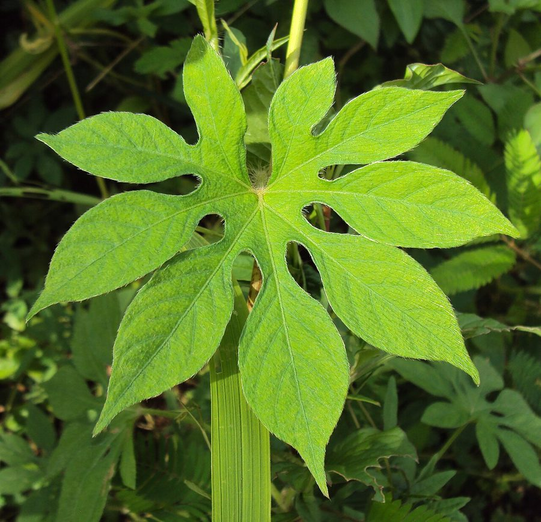

टाइगर्स फुट मॉर्निंग ग्लोरीTiger's Foot Morning Glory
Ipomoea pes-tigridis · Convolvulaceae · FLR-0415

- Scientific name वैज्ञानिक नाम
- Ipomoea pes-tigridis L.
- Family कुल
- Convolvulaceae
- Hindi हिंदी
- टाइगर्स फुट मॉर्निंग ग्लोरी
- Local names स्थानीय नाम
- tigers foot morning glory
- Status here यहाँ की स्थिति
- native
- Movement आवागमन
- Resident, here all year
- Known from कहाँ दर्ज
- Others have published records from the wider Awadh–Purvanchal plain, none yet from Basti–Ayodhya अवध–पूर्वांचल से दूसरों के प्रकाशित अभिलेख, बस्ती–अयोध्या से अभी नहीं
- IUCN IUCN
- not evaluated
- Review समीक्षा
- not yet reviewed
When to look कब देखें
Expected mainly in July, August, September, October, November, December. मुख्यतः जुलाई, अगस्त, सितंबर, अक्टूबर, नवंबर, दिसंबर में अपेक्षित।
Tell it apart from इनसे अलग पहचानें
टाइगर्स फुट मॉर्निंग ग्लोरी / Tiger's Foot Morning Glory
Ipomoea pes-tigridis L. — Convolvulaceae
टाइगर्स फुट मॉर्निंग ग्लोरी — जिसे स्थानीय रूप से बाघ नखा या पंचपत्ती बेल भी कहा जाता है, यह बरसात और ठंड के दिनों में बाड़ों, झाड़ियों और मेड़ों पर फैलने वाली एक रोयेंदार बेल है। इसकी पत्तियाँ हथेली के आकार में गहरी कटी होती हैं जो बाघ के पंजे जैसी दिखाई देती हैं। इसके सफेद या हल्के गुलाबी रंग के सुंदर कीप जैसे फूल सुबह खिलते हैं।
Quick Identification त्वरित पहचान
| Feature | Description |
|---|---|
| Plant habit | Slender, twining or prostrate annual herb covered with spreading bristly hairs |
| Stems | Clothed with long, rigid, patently spreading, yellowish or brownish hairs |
| Leaves | Deeply palmately five- to nine-lobed; lobes obovate, resembling a tiger paw footprint |
| Inflorescence | Dense, head-like, involucrate axillary cymes on long hairy peduncles |
| Bracts | Large, foliaceous, outer ones oblong-lanceolate, bristly-hairy |
| Flowers | Funnel-shaped, white, cream or pale pink, opening in the early morning |
| Fruit | Globose, ovoid, papery capsule enclosed within the persistent hairy calyx |
Field tip: Look for twining hairy vines bearing distinctive palmately divided leaves with five to nine rounded lobes shaped like a tiger paw.
हिंदी: बाघ के पंजे जैसी पांच से नौ भागों में कटी पत्तियाँ, रोयेंदार तने और सफेद कीप जैसे फूल इसकी पहचान हैं।
Morphology आकारिकी
Measurement not available in consulted sources.
A slender, twining, trailing or scrambling annual herbaceous vine. Root system fibrous and shallow. Stems slender, terete, twining dextrorsely or prostrate along the ground, clothed throughout with dense, long, rigid, spreading or reflexed bristly hairs of a pale yellowish or brownish colour.
Leaves alternate, deeply palmately divided nearly to the base into five to nine (most commonly seven) distinct segments, cordate or truncate at the base; lobes obovate, elliptic or oblong, acute, obtuse or apiculate at the apex, entire, densely appressed-pilose on both surfaces with soft, silky, whitish hairs; petiole slender, hairy, about as long as the blade.
Inflorescence consisting of several flowers aggregated into a dense, capitate, head-like cyme, borne on an elongated, stout, densely hirsute axillary peduncle. Inflorescence surrounded by an involucre of large, persistent, foliaceous bracts; outer bracts oblong to linear-lanceolate, obtuse, densely hirsute with long spreading hairs; inner bracts smaller.
Calyx deeply five-lobed, segments lanceolate, acute, densely hirsute. Corolla funnelform or tubular-campanulate, white, cream-coloured or faint pinkish-purple; limb spreading, plicate, five-lobed. Stamens five, unequal, included.
Fruit a globose, ovoid or subquadrate, glabrous, bivalved or four-valved capsule, enclosed within the enlarged, persistent, bristly calyx and bracts. Seeds four, rounded on the back, flat on the inner faces, greyish-brown, covered with a fine velvet-like down and long silky hairs along the margins.
हिंदी: बेल के पूरे शरीर पर कड़े रोयें होते हैं। पत्तियाँ बाघ के पंजे की तरह कटी होती हैं। फूल सफेद या हल्के गुलाबी और कीप जैसे होते हैं। फल गोल होते हैं जिनके भीतर रोयेंदार बीज बनते हैं।
Behaviour & Ecology व्यवहार और पारिस्थितिकी
A widespread native Indian annual twiner common across open sunny habitats, agricultural verges, riverbanks, and secondary scrub. It thrives in well-drained alluvial and sandy soils, using its bristly twining stems to scramble over shrubs, field fences, and tall grasses.
The flowers open early in the morning shortly after sunrise and usually close by late morning or midday in response to rising heat and bright sun. They produce nectar that attracts early-morning bees and butterflies. The dense covering of bristly hairs protects the plant from insect herbivores and reduces water loss on hot autumn afternoons.
हिंदी: यह बेल बाड़ों और झाड़ियों पर तेजी से चढ़ती है। इसके फूल सुबह खिलते हैं और दोपहर की धूप में बंद हो जाते हैं। तने के कांटेदार बाल इसे कीड़ों से बचाते हैं।
Life Cycle / Phenology जीवन चक्र
Seeds germinate with the arrival of the southwest monsoon in July. Climbing branches grow vigorously through July, August, and September, blanketing supporting shrubs with palmately lobed foliage.
Flowering begins in August and continues through October, November, and early December. Capsules mature rapidly within the protective hairy involucre from October through January. With the arrival of cold dry winter weather in January, the annual vine dries to a crisp straw texture and dies, casting seeds onto the soil to wait out the hot summer months.
हिंदी: जुलाई में बारिश के समय यह बेल उगती है। अगस्त से दिसंबर तक फूल और फल आते हैं। सर्दियों के अंत में बेल सूख जाती है और बीज जमीन पर गिर जाते हैं।
Associated Species / Interactions सहजीवी प्रजातियाँ
Early morning flowers are visited by honeybees, stingless bees, small halictid bees, and skipper butterflies.
Commonly scrambles over hedgerows alongside other climbers and weeds such as besharam (Ipomoea carnea), blue morning glory (Ipomoea nil), and chirchita (Achyranthes aspera).
हिंदी: सुबह-सुबह मधुमक्खियाँ और तितलियाँ इसके फूलों पर आती हैं। यह अक्सर अन्य लताओं और बाड़ों के पौधों के साथ पाई जाती है।
Pests and Diseases कीट और रोग
Tortoise beetles (Cassidinae) and their spiny larvae occasionally feed on the palmately lobed foliage, chewing small circular shot-holes. Fungal rust spots may appear on older leaves late in the season.
हिंदी: कभी-कभी कछुआ बीटल के कीड़े पत्तियों में छोटे छेद कर देते हैं और सर्दियों में पत्तियों पर जंग के धब्बे पड़ते हैं।
Agricultural / Human Relevance कृषि प्रासंगिकता
In eastern Uttar Pradesh, tiger's foot morning glory is a common ruderal climber along field borders, sugar cane margins, and pulse crops. When growing densely, it can occasionally twine around crop stalks, requiring manual weeding during intercultural operations.
हिंदी: यह खेतों की मेड़ों पर उगने वाली एक आम बेल है। कभी-कभी यह फसलों पर चढ़ जाती है।
Expected Locally स्थानीय रूप से अपेक्षित
Not a field record. Written from published accounts for eastern Uttar Pradesh. No confirmed local sighting yet — if you have seen it, that is what the atlas needs.
अभी तक स्थानीय पुष्टि नहीं। यह विवरण प्रकाशित स्रोतों से है, किसी अवलोकन से नहीं।
Expected on field borders, railway scrub, riverbank terraces along the Ghaghara and Kuwana, and village hedge lines across Basti, Ayodhya, and neighbouring districts from August through December. GBIF holds published records from the wider Awadh–Purvanchal plain, none yet from Basti–Ayodhya. The first verifiable record from the region will be a dated photograph of flowering plants or a population in a weed habitat or field border with district and coordinates.
हिंदी: बस्ती और अयोध्या में खेतों की मेड़ों, झाड़ियों और रास्तों के किनारे बरसात और ठंड में इसकी तलाश की जा सकती है।
Distribution वितरण
Global range: Native across tropical Africa, South Asia, Southeast Asia, and northern Australia; widely naturalized in tropical regions worldwide.
In India: Widespread across the tropical and subtropical plains, peninsular India, and the Gangetic basin.
In Uttar Pradesh: Distributed along field margins, scrub thickets, and sandy riverbanks across central and eastern districts.
In Basti district / eastern UP: Expected in all agricultural blocks on hedge lines and open wasteland.
हिंदी: यह पौधा अफ्रीका, भारत और एशिया के गर्म व नम मैदानी भागों में प्राकृतिक रूप से उगता है।
Research Questions शोध प्रश्न
- What micro-climatic factors dictate the variation between 5, 7, and 9 leaf lobes on individual vines in eastern UP?
- How do morning pollinator visitation rates differ between white-flowered and pale-pink-flowered morphs?
- What is the seed coat dormancy mechanism that allows seeds to survive extreme pre-monsoon summer heat? / गर्मियों की तेज धूप में इसके बीजों को नष्ट होने से बचाने वाली संरचना क्या है?
- How significantly does competition from this climber reduce harvest yields in pulse crops when growing on field borders? / मेड़ों पर इस बेल के चढ़ने से क्या पास की दलहनी फसलों की पैदावार प्रभावित होती है?
- Can a child observe the shape of the leaf and count the lobes that resemble the toes of a tiger paw?
हिंदी: क्या इसकी पत्तियाँ सचमुच बाघ के पंजे जैसी दिखती हैं और इसके फूल दोपहर से पहले क्यों बंद हो जाते हैं?
Similar Species मिलती-जुलती प्रजातियाँ
| Species | How to tell apart | हिंदी | |
|---|---|---|---|
| `[[blue_morning_glory\ | Ipomoea nil]]` | Leaves trilobed or heart-shaped, not palmately five- to nine-lobed; flowers large, showy bright blue | पत्तियाँ तीन फांक वाली या दिल के आकार की और फूल चमकीले नीले होते हैं |
| `[[besharam\ | Ipomoea carnea subsp. fistulosa]]` | Large erect or sprawling woody shrub; leaves ovate-lanceolate, entire; flowers large, pink | सीधा बड़ा झाड़ीदार पौधा, पत्तियाँ पूरी और फूल बड़े गुलाबी होते हैं |
Field rule: Look for the palmately 5- to 9-lobed leaves shaped like a tiger paw footprint and the densely bristly hairy twining stems with white funnel flowers.
हिंदी: बाघ के पंजे जैसी कटी हुई पत्तियाँ और कड़े बालों से ढकी बेल इसे मॉर्निंग ग्लोरी की अन्य प्रजातियों से अलग करती हैं।
Taxonomy & Classification वर्गीकरण
Original description. Described by Carl Linnaeus in 1753 in Species Plantarum, volume 1, page 162.
Subspecies. Monotypic in northern India; several varieties have been proposed based on leaf lobe count and pubescence, but these represent clinal variations.
Family and order placement. Placed in family Convolvulaceae (tribe Ipomoeeae), order Solanales.
Phylogenetic notes. Placed within Ipomoea, distinguished by its capitate head-like cymes surrounded by a foliaceous involucre of bristly bracts.
IUCN status rationale. Not evaluated by the IUCN Red List. It is an extremely common, widespread, and ecologically adaptable native climber across the Old World tropics.
हिंदी: यह कॉन्वॉल्वुलेसी (मॉर्निंग ग्लोरी कुल) का पौधा है। लिनियस ने 1753 में इसका मूल वर्णन किया था।
Photo Gallery फोटो गैलरी
No photos yet — add field photos to media/species/tigers_foot_morning_glory/ and run node scripts/sync_photos.js.
Photos needed आवश्यक फोटो
- [ ] Palmately lobed leaf resembling tiger footprint (बाघ के पंजे जैसी कटी पत्ती)
- [ ] Bristly twining stem and head-like inflorescence (रोयेंदार तना और फूलों का गुच्छा)
- [ ] White funnel-shaped flower opening in morning light (सुबह खिला सफेद कीप जैसा फूल)
References संदर्भ
- Linnaeus, C. (1753). Species Plantarum, vol. 1, p. 162.
- Duthie, J. F. (1911). Flora of the Upper Gangetic Plain and of the Adjacent Siwalik and Sub-Himalayan Tracts, vol. 2, p. 116.
- Hooker, J. D. (1883). The Flora of British India, vol. 4, p. 204.
- Chopra, R. N., Nayar, S. L. & Chopra, I. C. (1956). Glossary of Indian Medicinal Plants, Council of Scientific and Industrial Research, New Delhi, p. 143.
- GBIF Occurrence Data — Ipomoea pes-tigridis, India (2025).
Source file: species/flora/climbers/tigers_foot_morning_glory.md